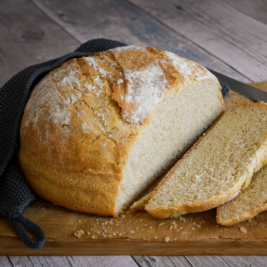

Pan casero

Resumen
Tiempo de preparación: 5 horas
Tiempo de cocción: 30 minutos
Porciones: 4
Comer con mermelada de durazno y queso
Ingredientes
- Harina 000 560 gramos
- Harina integral 190 gramos
- Agua tibia 600cc
- Sal Kosher 17 gramos
- Levadura 3 gramos
Pasos
- En un bowl muy grande mezcla con tus manos la harina y el agua hasta que se hayan unido. Dejar reposar por 10 minutos.
- Agregar la sal y la levadura sobre la masa y distribuyela pinchando, estirando y doblando con tus manos por unos 5 minutos.
- Cubrir y dejar reposar la masa en un lugar muy oscuro por unos 20 minutos y volver a doblar la masa unas 5 o 6 veces (mejor 6!).
- Cubrir y dejar reposar por 60 minutos, luego volver a doblar 5 o 6 veces de nuevo.
- Cubrir y dejar reposar, pero esta vez por 2 horas hasta que (notarás que creció de tamaño).
- Mientras tanto calienta el horno a unos 250 grados centígrados (475 farenheit) con una olla de hierro por 30 minutos.
- Pon la masa en la olla (cuidado que está caliente!) y dejar cocinar por 30 minutos.
- Quitar del horno y dejar reposar en un recipiente de madera por 20 minutos.
- Distrutar!